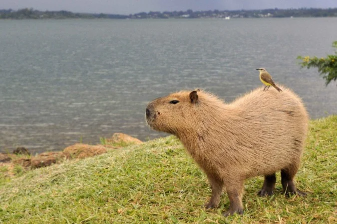
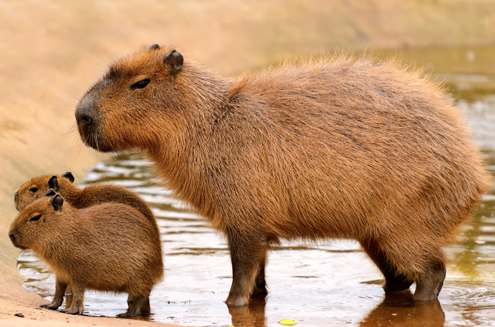
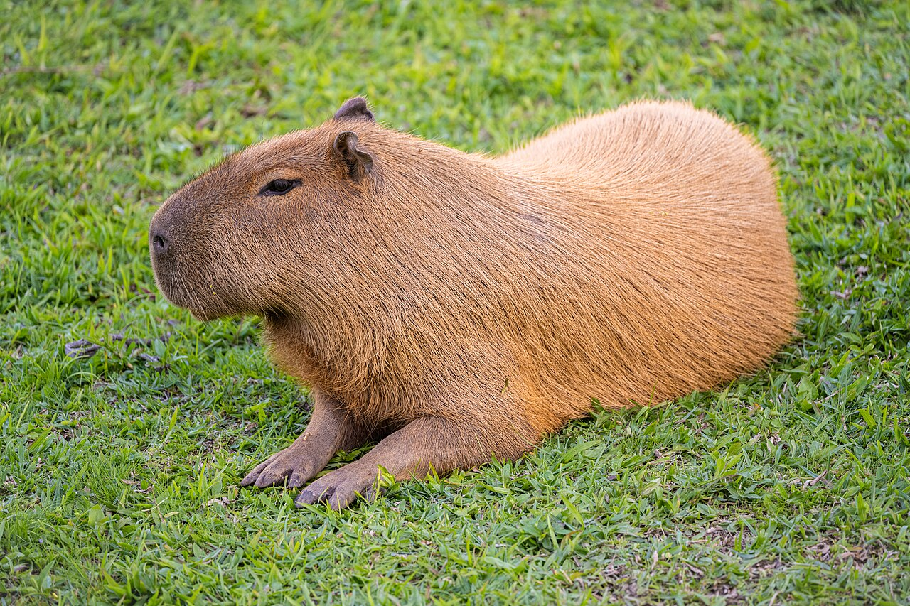

SEJAM BEM VINDOS AO MEU SITE!
conheça tudo sobre as Capivaras! Aqui está uma imagem dela:

As capivaras são animais nativos do Paraná e historicamente viviam próximas a rios, lagos e áreas alagadas. Com a agricultura, urbanização e construção de represas, elas se adaptaram a novos ambientes. Atualmente, são encontradas tanto em áreas rurais quanto em parques e cidades, como Curitiba.
Quando: As capivaras já viviam no Paraná há muito tempo, antes da urbanização. Onde: Principalmente perto de rios, lagos e áreas verdes, como os parques de Curitiba. Como: Com o crescimento das cidades, elas se adaptaram aos parques e áreas urbanas, tornando-se parte da paisagem e da cultura paranaense.

importante para o patrimonio cultural do Brasil
A capivara é importante culturalmente no Paraná porque virou um símbolo da fauna local, especialmente em Curitiba. Ela está presente em parques, memes e manifestações culturais, além de representar a preservação da natureza.

Curiosidades
Curiosidade: A capivara é o maior roedor do mundo! Ela pode pesar mais de 50 kg e é uma excelente nadadora, conseguindo ficar bastante tempo na água para se proteger de predadores
Uma informação importante é que as capivaras são animais sociais: elas vivem em grupos e dependem de áreas com água e vegetação para sobreviver. Por isso, preservar rios, lagos e áreas verdes é importante para a conservação da espécie.